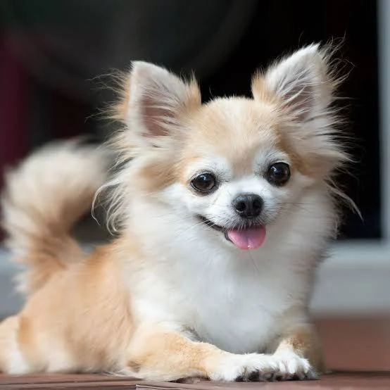
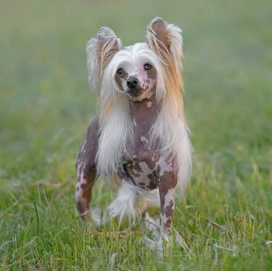
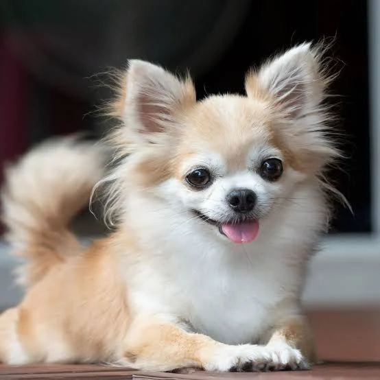
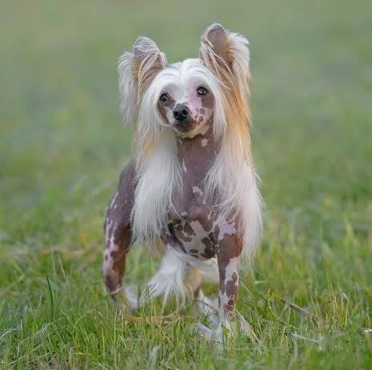

Французский Бульдог
Французский бульдог (фр. bouledogue français) — порода собак. Некрупная порода, отличающаяся крупной, но короткой мордой, плоским раздвоенным носом, широкой раздвоенной верхней губой. Стоячие уши, широкие у основания и закругляющиеся сверху. Выступающие надбровные дуги отделены друг от друга глубокой бороздкой между глазами. Бороздка не должна продолжаться на лбу, как у английских бульдогов. Затылочный бугор слабо развит[1]. Могут иметь самый разнообразный окрас: тигровый, бело-тигровый, палевый, бело-палевый. Кремовый окрас не признаётся стандартами породы FCI (Европейской Кинологической Федерацией) и РКФ, но широко распространён в Америке.
Золотистый ретривер
Золоти́стый ретри́вер, или го́лден-ретри́вер, — порода охотничьих собак, выведенная в Великобритании в XIX веке.Золотистый ретривер — это собака гармоничного телосложения, с крепкими и мускулистыми конечностями и округлыми лапами.

Мальтийская болонка
Генная инженерия позволяет изменять ДНК живых организмов, открывая возможности для лечения наследственных заболеваний, создания устойчивых культур и даже восстановления вымерших видов.

Мопс
Мопс (нид. mops) — порода декоративных собак. Мопсы были привезены из Китая в Европу в XVI веке и были популярны в Западной Европе, попав туда через Нидерланды. В Соединённом Королевстве в XIX веке королева Виктория развила страсть к мопсам, которую она передала другим членам королевской семьи.
Пудель
Пу́дель (нем. Pudel, от puddeln — «плескаться в воде») — порода собак. Изначально пудель являлся рабочей собакой, в частности использовался на охоте. Современные пудели — преимущественно декоративные собаки.
Немецкая овчарка — порода собак, изначально использовалась в качестве пастушьей и служебно-разыскной собаки. Немецкая овчарка была получена в результате селекции и скрещивания некоторых разновидностей гуртовых собак Центральной и Южной Германии. Различают гладкошёрстную и длинношёрстную разновидности.
Немецкая овчарка
Англи́йский бульдо́г (также бульдог, англ. bulldog, дословно: «бычья собака») — короткошёрстная порода собак типа мастифов. По способу использования стандарт относит породу к собакам-телохранителям и компаньонам[1]. Современные английские бульдоги выведены во второй половине XIX века, в основе породы — староанглийский бульдог, травильная порода собак, ныне вымершая.